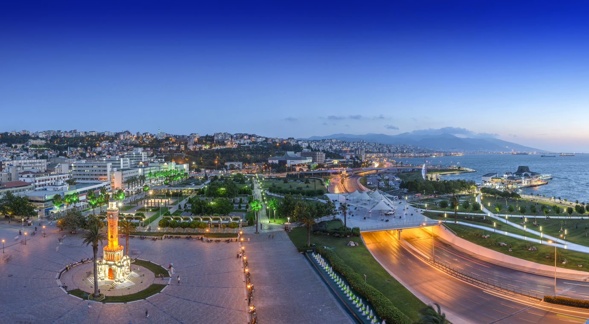

İzmir’in Merkezi: Konak

İzmir şehir merkezinden bahsediyorsak Konak Meydanı hakkında konuşuyoruz demektir.
İzmir’in tarihi yapılarının birçoğunun bulunduğu Konak, şehrin en eski noktalarından biri olarak İzmir’de gezilecek yerler listesinin birçok unsurunu içerisinde barındırıyor.
İzmir’in en büyük ilçelerinden olan Konak’ta görülebilecek birçok şey var.
Örneğin Saat Kulesi, Kızlarağası Hanı, Alsancak Garı, Borsa Binası, Pasaport İskelesi, Tarihi Havagazı Fabrikası… Konak’ta görülecek çok şey var! Aşağıya bir liste bırakıyoruz:
İzmir’de en güzel yerlerden biri olarak görülen Kordon ile sanal gezimize devam edelim.
Manzaralar İçin Buraya: Kordon
İzmir’de gezilecek yerler arasında en canlı bölge, Kordon Boyu ismi verilen sahil kesimidir.
Kıyı boyunca uzanan caddede gün boyunca sohbet eden, kestiren, müzik yapan, dans eden insanlar ve lezzetli yiyecekler satan seyyar satıcılar görebilirsin. Cadde üzerinde ayrıca eğlence mekanları sıralanmış. Yani sahil kenarında keyifli bir gün ya da gece geçirmek isteyenler burada buluşuyor.
Ayrıca İzmir’in en iyi gün batımı manzarası noktalarından biri de burası.
İster kendi başınıza ister sevdiklerinizle denizin tuzlu kokusunu içine çekerek İzmir’i keşfetmek istiyorsanız Kordonboyu’nda kesinlikle bir yürüyüşe çıkmanızı tavsiye ediyoruz.